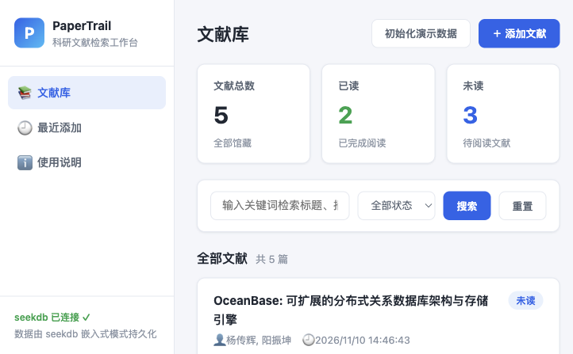
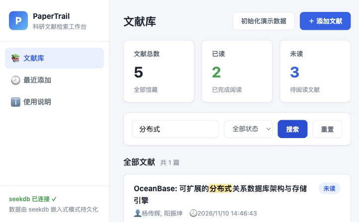
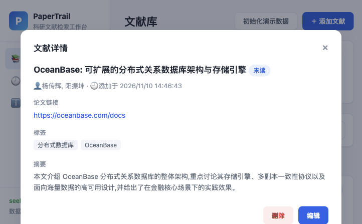
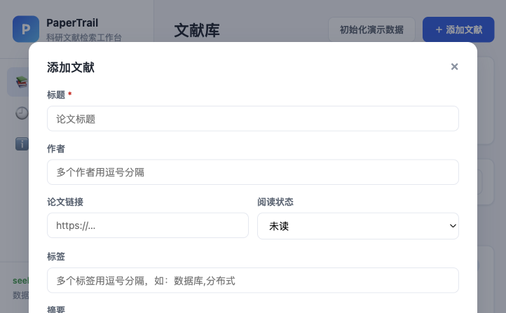

基于 FastAPI 与 seekdb 的本地科研文献管理系统：集中管理论文摘要、阅读状态与个人笔记，用真实数据库检索快速找到你读过的每一篇文献。
科研人员长期面对的资料管理难题，正是 PaperTrail 的出发点。
论文散落在浏览器收藏、下载文件夹和聊天记录里，阅读笔记与原文脱离，回看时找不到出处。
想找"之前读过的那篇讲分布式存储的论文"只能靠翻历史记录。PaperTrail 用 seekdb 全文检索，直接命中标题、摘要与笔记中的关键词。
哪些读了、哪些还没读、重点笔记在哪，缺少统一的视图。PaperTrail 提供已读/未读统计看板与状态筛选，让进度一目了然。
完整记录标题、作者、摘要、链接、标签、阅读状态与个人笔记，支持详情查看与随时修改、删除。
搜索走 seekdb 真实全文检索（全文索引 + 子串匹配），关键词在结果中高亮，并可叠加已读/未读状态过滤。
文献总数、已读、未读一屏呈现，「最近添加」视图快速回顾最新收录的文献。
所有数据写入本地 seekdb 嵌入式数据库，刷新页面或重启应用后数据依然保留，已由跨进程测试验证。
以下截图均来自 PaperTrail 在本机真实运行时的界面（统计数字为本地数据库中的真实数据：5 篇文献，2 篇已读，3 篇未读），未做任何虚构或修饰。




后端通过官方 pyseekdb SDK 的本地嵌入式模式读写 seekdb，前端零框架、零构建，直接以 REST API 与后端通信。
以下为项目开发过程中实际执行的自动化验证结果，全部针对真实 seekdb 数据库读写，不使用模拟数据。
项目代码已提交至比赛指定分支：github.com/ssyyss12138/OceanBase-p（2026-competition-ecosystem 分支，qoder/ 目录）。
首次启动自动初始化 seekdb 数据库并幂等写入 3 条演示文献；数据持久化在 qoder/data/seekdb.db/ 目录。
两个阶段分别以独立进程运行，以真实证明数据已持久化到 seekdb；全部断言通过时退出码为 0。